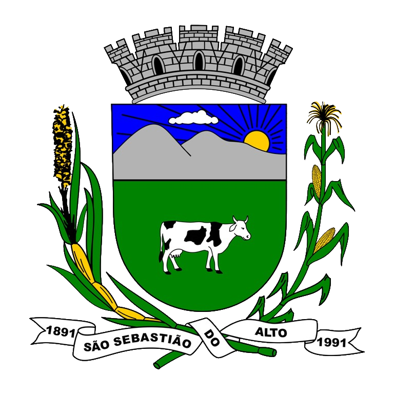

Prefeitura de
São Sebastião do Alto
Administração ▼
Secretarias municipais
Processo seletivo
Legislação
O Município
Serviços ▼
Portal de atendimento ao cidadão
Alvará online
Contracheque online
NFS-e
IPTU - 2ª via
JUCERJA regin
Webmail
Acesso à informação ▼
Lei muncipal de acesso à informação
Portal da transparência
Licitações
Audiências públicas
Entenda a lai
Peça uma informação
Recursos: Passo-à-passo
Saiba mais
Fala.BR
►
legislação
►
Leis e decretos 2023
Leis e decretos 2023
Leis:
LEI Nº 884-2023 – ALTERA A LEI MUNICIPAL N. 675/2014, CONFORME MENCIONA, E DÁ OUTRAS PROVIDÊNCIAS
LEI Nº 885-2023 – ESTABELECE REGRAS PARA O PROCESSO DE ESCOLHA DOS MEMBROS DO CONSELHO TUTELAR, NA FORMA DA RESOLUÇÃO CONANDA N. 231, DE 28 DE DEZEMBRO DE 2022, E DÁ OUTRAS PROVIDÊNCIAS
LEI Nº 886-2023 – ALTERA A NOMENCLATURA DO CARGO QUE MENCIONA, E DÁ OUTRAS PROVIDÊNCIAS
LEI Nº 887-2023 – DISPÕE SOBRE AS DIRETRIZES PARA A ELABORAÇÃO DA LEI ORÇAMENTÁRIA PARA 2024 E DÁ OUTRAS PROVIDÊNCIAS
QUADRO DE DETALHAMENTO DA DESPESA – QDD 2024
LEI Nº 888-2023 – ADOTA MEDIDAS EMERGÊNCIAS QUE MENCIONA, E DÁ OUTRAS PROVIDENCIAS
LEI Nº 889-2023 – INSTITUI O SERVIÇO HÍBRIDO (PRESENCIAL E REMOTO), NO ÂMBITO DA ADMINISTRAÇÃO PÚBLICA MUNICIPAL DE SÃO SEBASTIÃO DO ALTO, CONFORME MENCIONA, E DÁ OUTRAS PROVIDENCIAS
LEI Nº 890-2023 – REGULAMENTA O REPASSE DO COMPLEMENTO DO PISO NACIONAL DA ENFERMAGEM NO ÂMBITO DA ADMINISTRAÇÃO PÚBLICA DE SÃO SEBASTIÃO DO ALTO-RJ, CONFORME MENCIONA E DÁ OUTRAS PROVIDÊNCIAS
LEI Nº 891-2023 – DISPÕE SOBRE OS SUBSÍDIOS DO PREFEITO, VICE-PREFEITO E SECRETÁRIOS MUNICIPAIS DE SÃO SEBASTIÃO DO ALTO, REDUÇÃO EM 20% (VINTE POR CENTO)
Decretos:
DECRETO Nº 2.290-2023 – ABRE CRÉDITO ADICIONAL SUPLEMENTAR
DECRETO Nº 2.291-2023 – SUSPENDE, TEMPORARIAMENTE, O DIREITO LICITAR E CONTRATAR COM O MUNICÍPIO DE SÃO SEBASTIÃO DO ALTO-RJ, A EMPRESA QUE MENCIONA E DÁ OUTRAS PROVIDENCIAS
DECRETO Nº 2.292-2023 – FICA CONCEDIDA AUTORIZAÇÃO DE USO A SENHORA MARCIA TEMPERINI CARDOZO
DECRETO Nº 2.293-2023 – DECLARA LUTO OFICIAL NO MUNICÍPIO DE SÃO SEBASTIÃO DO ALTO-RJ, E DÁ OUTRAS PROVIDÊNCIAS
DECRETO Nº 2.294-2023 – CONVOCA A XII CONFERENCIA MUNICIPAL DE SAÚDE DO MUNICÍPIO DE SÃO SEBASTIÃO DO ALTO” E DÁ OUTRAS PROVIDENCIAS
DECRETO Nº 2.295-2023 – ABRE CRÉDITO ADICIONAL SUPLEMENTAR
DECRETO Nº 2.296-2023 – CONSIDERA PONTO FACULTATIVO NOS ÓRGÃOS PÚBLICOS MUNICIPAIS E DÁ OUTRAS PROVIDÊNCIAS
DECRETO Nº 2297-2023 – ABRE CRÉDITO ADICIONAL SUPLEMENTAR
DECRETO Nº 2.298-2023 – DECLARA EM SITUAÇÃO ANORMAL, CARACTERIZADA COMO SITUAÇÃO DE EMERGÊNCIA NO ÂMBITO DA SEDE DO 1º DISTRITO DO MUNICÍPIO DE SÃO SEBASTIÃO DO ALTO-RJ, EM FUNÇÃO DE CHUVAS INTENSAS
DECRETO Nº 2.299-2023 – DECLARA EM SITUAÇÃO ANORMAL, CARACTERIZADA COMO SITUAÇÃO DE EMERGÊNCIA NO ÂMBITO DA SEDE DO 1º DISTRITO DO MUNICÍPIO DE SÃO SEBASTIÃO DO ALTO-RJ, EM FUNÇÃO DE CHUVAS INTENSAS
DECRETO Nº 2.300-2023 – FICA ALTERADO O ART. 1º DO DECRETO N. 22922023
DECRETO Nº 2.301-2023 – FICA RECONHECIDA COMO SÍMBOLO HISTÓRICO DO MUNICÍPIO DE SÃO SEBASTIÃO DO ALTO-RJ, A ÁRVORE CONHECIDA COMO, FIGUEIRA, DE NOME CIENTÍFICO BODDHI FICUS RELIGIOSA
DECRETO Nº 2.302-2023 – FICAM RECONHECIDOS, COMO OBJETOS DE VALOR HISTÓRICO DO MUNICÍPIO DE SÃO SEBASTIÃO DO ALTO-RJ
DECRETO Nº 2.303-2023 – APLICA PENALIDADE QUE MENCIONA, NA FORMA DO RELATÓRIO DO TCE-RJ NOS AUTOS DO PROCESSO TCE-RJ N. 221.840-82015, E DA OUTRAS
DECRETO Nº 2.304-2023 – APLICA PENALIDADE QUE MENCIONA, NA FORMA DO RELATÓRIO DO TCE-RJ NOS AUTOS DO PROCESSO TCE N. 214.577-22015
DECRETO Nº 2.305-2023 – FICAM AUTORIZADAS AS OBRAS DE REESTILIZAÇÃO DO “BUSTO DO DOUTOR HERMES FERRO”
DECRETO Nº 2306-2023 – INSTITUI O PROGRAMA MUNICIPAL DE RETORNO SEGURO ÀS AULAS PRESENCIAIS IV DO MUNICÍPIO DE SÃO SEBASTIÃO DO ALTO E DÁ OUTRAS PROVIDENCIAS
DECRETO Nº 2307-2023 – INSTITUI O PROGRAMA MUNICIPAL VIII PARA ENFRENTAMETO AO NOVO CORONAVIRUS – COVID – 19, DO MUNICÍPIO DE SÃO SEBASTIÃO DO ALTO –RJ, E DÁ OUTRAS PROVIDÊNCIAS
DECRETO Nº 2308-2023 – DISPÕE SOBRE O REGIME LEGAL DE LICITAÇÕES E CONTRATOS ADMINISTRATIVOS
DECRETO Nº 2309-2023 – CONSIDERA PONTO FACULTATIVO NOS ÓRGÃOS PÚBLICOS MUNICIPAIS E DÁ OUTRAS PROVIDÊNCIAS
DECRETO Nº 2310-2023 – SUSPENDE, TEMPORARIAMENTE, O DIREITO LICITAR E CONTRATAR COM O MUNICÍPIO DE SÃO SEBASTIÃO DO ALTO-RJ, A EMPRESA QUE MENCIONA E DÁ OUTRAS PROVIDENCIAS
DECRETO Nº 2311-2023 – CONSIDERA PONTO FACULTATIVO NOS ÓRGÃOS PÚBLICOS MUNICIPAIS E DÁ OUTRAS PROVIDÊNCIAS
DECRETO Nº 2312-2023 – REGULAMENTA O COMÉRCIO AMBULANTE, QUE MENCIONA, DURANTE OS FESTEJOS DE 132 ANOS DE EMANCIPAÇÃO POLÍTICO-ADMINISTRATIVA DO MUNICÍPIO DE SÃO SEBASTIÃO DO ALTO-RJ
DECRETO Nº 2313-2023 – ABRE CRÉDITO ADICIONAL SUPLEMENTAR
DECRETO Nº 2314-2023 – SUSPENDE, TEMPORARIAMENTE, O DIREITO LICITAR E CONTRATAR COM O MUNICÍPIO DE SÃO SEBASTIÃO DO ALTO-RJ, A EMPRESA QUE MENCIONA E DÁ OUTRAS PROVIDENCIAS
DECRETO Nº 2315-2023 – ABRE CRÉDITO ADICIONAL SUPLEMENTAR
DECRETO Nº 2316-2023 – REVOGA DECRETO QUE MENCIONA E DA OUTRAS PROVIDENCIAS
DECRETO Nº 2317-2023 – CONCEDE PERMISSÃO DE USO
DECRETO Nº 2318-2023 – ABRE CRÉDITO ADICIONAL SUPLEMENTAR
DECRETO Nº 2319-2023 – CONSOLIDA A LEGISLAÇÃO TRIBUTÁRIA DO MUNICÍPIO DE SÃO SEBASTIÃO DO ALTO
DECRETO Nº 2.320-2023 – APROVA O PLANO DE COMBATE À EVASÃO E SONEGAÇÃO FISCAL
DECRETO Nº 2321-2023 – ABRE CRÉDITO ADICIONAL SUPLEMENTAR
DECRETO Nº 2322-2023 – ABRE CRÉDITO ADICIONAL SUPLEMENTAR
DECRETO Nº 2323-2023 – ABRE CRÉDITO ADICIONAL SUPLEMENTAR
DECRETO Nº 2324-2023 – ALTERA O DECRETO N. 412, DE 05 DE OUTUBRO DE 2001, E DÁ OUTRAS PROVIDÊNCIAS
DECRETO Nº 2325-2023 – CONCEDE PERMISSÃO PARA O SERVIÇO DE TRANSPORTE ALTERNATIVO DE PASSAGEIROS NO MUNICÍPIO DE SÃO SEBASTIÃO DO ALTO E DÁ OUTRAS PROVIDÊNCIAS
DECRETO Nº 2326-2023 – REVOGA PERMISSÃO DE USO QUE MENCIONA, E DÁ OUTRAS PROVIDENCIAS
DECRETO Nº 2327-2023 – CONCEDE PERMISSÃO DE USO PARA O SERVIÇO DE TRANSPORTE INDIVIDUAL DE PASSAGEIROS – TAXI NO MUNICÍPIO DE SÃO SEBASTIÃO DO ALTO-RJ, E DÁ OUTRAS PROVIDÊNCIAS
DECRETO Nº 2328-2023 – INSTITUI O PROGRAMA MUNICIPAL DE APOIO AO AUTISTA E DÁ OUTRAS PROVIDENCIAS
DECRETO Nº 2329-2023 – REGULAMENTA ITINERÁRIOS QUE MENCIONA, DO TRANSPORTE PÚBLICO MUNICIPAL
DECRETO Nº 2330-2023 – CONVOCA A XIV CONFERENCIA MUNICIPAL DE ASSISTÊNCIA SOCIAL DO MUNICÍPIO DE SÃO SEBASTIÃO DO ALTO” E DÁ OUTRAS PROVIDENCIAS
DECRETO Nº 2331-2023 – CONSIDERA PONTO FACULTATIVO NOS ÓRGÃOS PÚBLICOS MUNICIPAIS E DÁ OUTRAS PROVIDÊNCIAS
DECRETO Nº 2332-2023 – ABRE CRÉDITO ADICIONAL SUPLEMENTAR
DECRETO Nº 2333-2023 – ABRE CRÉDITO ADICIONAL SUPLEMENTAR
DECRETO Nº 2334-2023 – ABRE CRÉDITO ADICIONAL SUPLEMENTAR
DECRETO Nº 2335-2023 – ABRE CRÉDITO ADICIONAL SUPLEMENTAR
DECRETO Nº 2336-2023 – CONCEDE PERMISSÃO PARA O SERVIÇO DE TRANSPORTE ALTERNATIVO DE PASSAGEIROS NO MUNICÍPIO DE SÃO SEBASTIÃO DO ALTO E DÁ OUTRAS PROVIDÊNCIAS
DECRETO Nº 2337-2023 – SUSPENDE, TEMPORARIAMENTE, O DIREITO LICITAR E CONTRATAR COM O MUNICÍPIO DE SÃO SEBASTIÃO DO ALTO-RJ, A EMPRESA QUE MENCIONA E DÁ OUTRAS PROVIDENCIAS
DECRETO Nº 2338-2023 – SUSPENDE, TEMPORARIAMENTE, O DIREITO LICITAR E CONTRATAR COM O MUNICÍPIO DE SÃO SEBASTIÃO DO ALTO-RJ, A EMPRESA QUE MENCIONA E DÁ OUTRAS PROVIDÊNCIAS
DECRETO Nº 2339-2023 – ABRE CRÉDITO ADICIONAL SUPLEMENTAR
DECRETO Nº 2340-2023 – ABRE CRÉDITO ADICIONAL SUPLEMENTAR
DECRETO Nº 2341-2023 – ABRE CRÉDITO ADICIONAL SUPLEMENTAR
DECRETO Nº 2342-2023 – ALTERA DECRETO QUE MENCIONA E DÁ OUTRAS PROVIDENCIAS
DECRETO Nº 2343-2023 – DECLARA EM SITUAÇÃO ANORMAL, CARACTERIZADA COMO SITUAÇAO DE EMERGENCIA NO ÂMBITO DA SEDE DO 1º DISTRITO DO MUNICÍPIO DE SÃO SEBASTIÃO DO ALTO-RJ, EM FUNÇÃO DE CHUVAS INTENSAS (COBRADE1.3.2.1.4)
DECRETO Nº 2344-2023 – REVOGA DECRETOS QUE MENCIONA, E DA OUTRAS PROVIDENCIAS
DECRETO Nº 2345-2023 – DECLARA EM SITUAÇÃO ANORMAL, CARACTERIZADA COMO SITUAÇAO DE EMERGENCIA NO ÂMBITO DA SEDE DO 1º DISTRITO DO MUNICÍPIO DE SÃO SEBASTIÃO DO ALTO-RJ, EM FUNÇÃO DE CHUVAS INTENSAS (COBRADE1.3.2.1.4)
DECRETO Nº 2346-2023 – DISPÕE SOBRE O EXPEDIENTE NOS ÓRGÃOS PÚBLICOS MUNICIPAIS NOS DIAS DE JOGOS DA SELEÇÃO BRASILEIRA DE FUTEBOL NA COPA DO MUNDO FEMININA FIFA 2023
DECRETO Nº 2347-2023 – ABRE CRÉDITO ADICIONAL SUPLEMENTAR
DECRETO Nº 2348-2023 – ABRE CRÉDITO ADICIONAL SUPLEMENTAR
DECRETO Nº 2349-2023 – CONSIDERA PONTO FACULTATIVO NOS ÓRGÃOS PÚBLICOS MUNICIPAIS E DÁ OUTRAS PROVIDÊNCIAS
DECRETO Nº 2350-2023 – DECLARA LUTO OFICIAL NO MUNICÍPIO DE SÃO SEBASTIÃO DO ALTO-RJ, E DÁ OUTRAS PROVIDÊNCIAS
DECRETO Nº 2351-2023 – ABRE CRÉDITO ADICIONAL SUPLEMENTAR
DECRETO Nº 2352-2023 – ABRE CRÉDITO ADICIONAL SUPLEMENTAR
DECRETO Nº 2353-2023 – ABRE CRÉDITO ADICIONAL SUPLEMENTAR
DECRETO Nº 2354-2023 -ABRE CRÉDITO ADICIONAL SUPLEMENTAR
DECRETO Nº 2355-2023 – ABRE CRÉDITO ADICIONAL SUPLEMENTAR
DECRETO Nº 2356-2023 – CONSIDERA PONTO FACULTATIVO NOS ÓRGÃOS PÚBLICOS MUNICIPAIS E DÁ OUTRAS PROVIDÊNCIAS
DECRETO Nº 2357-2023 – CONCEDE PERMISSÃO PARA O SERVIÇO DE TRANSPORTE ALTERNATIVO DE PASSAGEIROS, CARACTERIZADO COMO TRANSPORTE ESCOLAR NO MUNICÍPIO DE SÃO SEBASTIÃO DO ALTO E DÁ OUTRAS PROVIDÊNCIAS
DECRETO Nº 2358-2023 – CONVOCA A II CONFERENCIA MUNICIPAL DE CULTURA DO MUNICÍPIO DE SÃO SEBASTIÃO DO ALTO E DÁ OUTRAS PROVIDENCIAS
DECRETO Nº 2359-2023 – ALTERA DECRETO N. 2329/2023, ALUSIVO AOS ITINERÁRIOS DO TRANSPORTE PÚBLICO GRATUITO, CONFORME MENCIONA, E DÁ OUTRAS PROVIDENCIAS
DECRETO Nº 2360-2023 – CONCEDE BAIXA DO VEÍCULO QUE MENCIONA, NO CADASTRO DO SERVIÇO DE TRANSPORTE INDIVIDUAL DE PASSAGEIROS – TAXI DO MUNICÍPIO DE SÃO SEBASTIÃO DO ALTO-RJ
DECRETO Nº 2361-2023 – CONSIDERA PONTO FACULTATIVO NOS ÓRGÃOS PÚBLICOS MUNICIPAIS E DÁ OUTRAS PROVIDÊNCIAS
DECRETO Nº 2362-2023 – CONCEDE BAIXA NA PERMISSÃO PARA O SERVIÇO DE TRANSPORTE ALTERNATIVO DE PASSAGEIROS DO MUNICÍPIO DE SÃO SEBASTIÃO DO ALTO-RJ